Unidades Didácticas
Interactivas para la Universidad


|
|
Unidades Didácticas Interactivas para la Universidad |
|
|
que implemente el Canvas de HTML5, como por ejemplo: Google Chrome, Mozila Firefox o Safari |
|
Un_004_IntroduccionAlCalculo 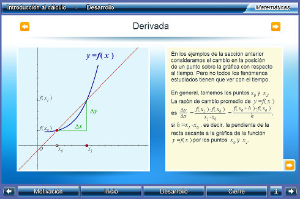 Descargar |
Introducción al cálculo
El objetivo de esta unidad es presentar al alumno los tres conceptos fundamentales del cálculo: el límite, la derivada y la integral, y el teorema fundamental del cálculo. El alumno podrá experimentar con los interactivos observando que el cálculo se basa en problemas de resolver límites, ya sea el límite de la suma de polígonos para el caso de la integral, o el límite de la pendiente de dos puntos arbitrariamente cercanos en una curva para la derivada. Se explica que el teorema fundamental del cálculo permite relacionar a la derivada e integral como funciones inversas. Área: Matemáticas, Cálculo, Cálculo diferencial e integral Nivel: Licenciatura |
|
|
Un_005_Sucesiones 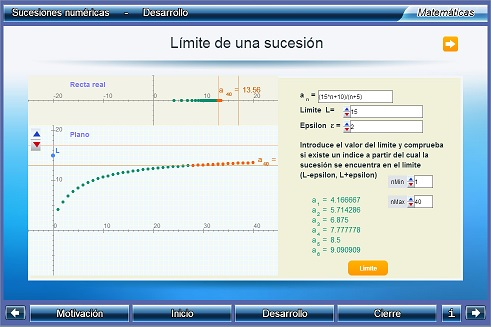 Descargar |
Sucesiones Numéricas
Se presentan algunos conceptos relacionados con las sucesiones, y dos tipos especiales de ellas: las aritméticas y las geométricas. Asimismo, se estudia el problema del límite de una sucesión, mostrando gráficamente el significado de convergencia a un número real, y de divergencia a infinito. Área: Matemáticas, Cálculo Nivel: Licenciatura |
|
Un_006_Series
Descargar |
Series
Los objetivos de la unidad son los siguientes: - introducir el concepto de convergencia de una serie - analizar la convergencia de algunas series notables como son las geométricas y las armónicas Área: Matemáticas, Cálculo Nivel: Licenciatura |
|
|
Un_007_GraficasDeFunciones 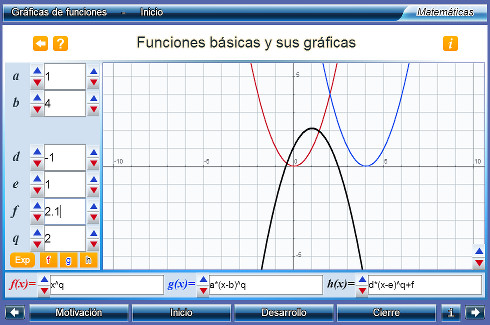 Descargar |
Gráficas de funciones
El objetivo de la unidad es presentar al alumno el concepto de graficación de una función. Mediante la unidad, podrá graficar funciones de su elección. Se permite al alumno graficar más de una función simultáneamente y se cuentan con pulsadores que representan parámetros que el alumno puede incluir en sus funciones, de tal suerte que pueda observar el efecto de tales al variarlos. Esta unidad puede aprovecharse, por ejemplo, para ilustrar el concepto de 'recta tangente' a una curva en un punto al graficar la función y su primera derivada. Área: Matemáticas, Gráficas de funciones Nivel: Licenciatura |
|
|
Un_013_SucesionesYSeries 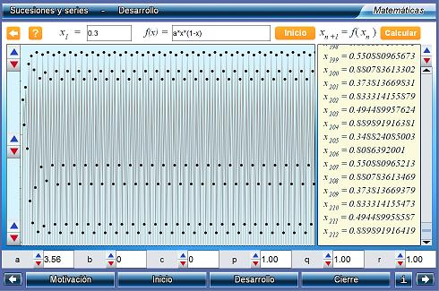 Descargar |
Sucesiones y series
El objetivo de esta unidad es introducir al alumno al concepto de sucesión. Para ello, se proporciona una ecuación inicial, cuyos parámetros pueden modificarse. El alumno puede editar la ecuación misma para probar ecuaciones de su elección. La sucesión se calcula paso a paso para observar cómo cambia respecto al parámetro n. Es posible observar, en caso de que la haya, que la sucesión tiene una cota que no es rebasada, y ésta es gráficamente representada por una recta para introducir el concepto de asíntota. Lo mismo se hace con sucesiones generadas mediante la aplicación recursiva de una función y las sucesiones correspondientes a una serie. Área: Matemáticas, Cálculo Nivel: Licenciatura |
|
|
Un_020_ValorPromedioDeUnaFuncion 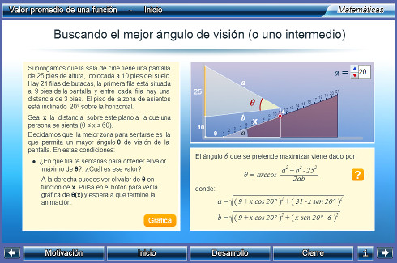 Descargar |
Valor promedio de una función
En esta unidad se presenta el Teorema del Valor Medio para integrales y en consecuencia el concepto de valor medio o promedio de una función. Como objetivos específicos se plantean: • Conocer el Teorema del Valor Medio integral y comprobarlo en diversos casos prácticos. • Dar una interpretación geométrica. • Calcular el valor medio de una función y el punto en el que se alcanza. Área: Matemáticas Nivel: Licenciatura |
|
Un_023_OperacionesConFunciones
Descargar |
Operaciones con funciones y sus gráficas
Se estudia el resultado gráfico de una operación con dos funciones f(x) y g(x). Específicamente las operaciones de suma f(x) +g(x), diferencia f(x)-g(x), producto f(x)*g(x), los cocientes f(x)/g(x) y g(x)/f(x) y las composiciones f(g(x)) y g(f(x)). Primero el estudio se hace con funciones f(x) y g(x) lineales y luego con funciones más generales, en particular con polinomios, senoides y campanas de Gauss. Área: Matemáticas, Cálculo, Funciones Nivel: Licenciatura |
|
Un_026_ElTeoremaDeGreen
Descargar |
El teorema de Green y el planímetro
En esta unidad se desarrollará el TG desde un punto de vista geométrico y, mediante ejemplos, se mostrará su aplicación a distintos problemas, en particular, al funcionamiento de un planímetro, el cual es un instrumento mecánico que permite calcular el área delimitada por una curva plana cerrada. Área: Matemáticas, Cálculo vectorial Nivel: Licenciatura |
|
|
Un_027_ExtremosVarias 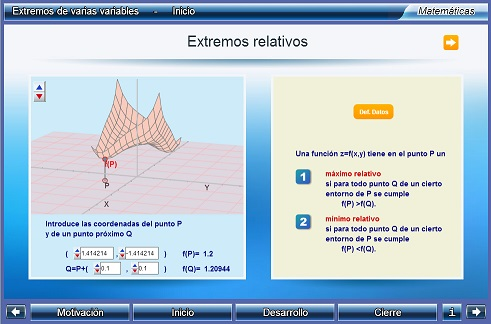 Descargar |
Extremos de varias variables
Se aborda el problema de encontrar los máximos y mínimos relativos de una función de varias variables. Se pretende: - Introducir el método del hessiano para la clasificación de extremos de funciones de varias variables. - Mostrar gráficamente la interpretacion del método de Lagrange para el cálculo de extremos condicionados en el caso de funciones de dos variables y una restricción. Área: Matemáticas Nivel: Licenciatura |
|
|
Un_033_DerivadaDireccional 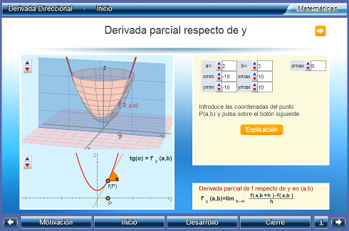 Descargar |
Derivada direccional
Se introduce el concepto de derivada direccional. Asimismo, se muestran sus propiedades y su relación con el gradiente. Área: Matemáticas Nivel: Licenciatura |
|
|
Un_034_PolinomiosDeTaylor 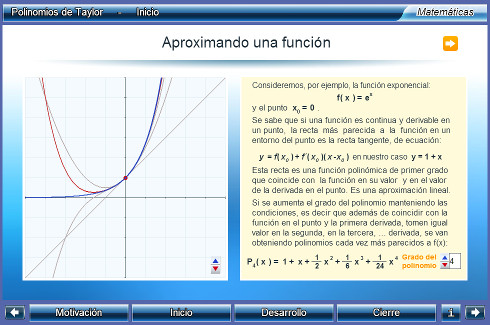 Descargar |
Polinomios de Taylor
El objetivo de esta unidad es conocer y aplicar el polinomio de Taylor para la aproximación local de funciones y medir el error de esa aproximación; observando la incidencia que tiene en esta medida el grado del polinomio utilizado y la cercanía al punto en el que se hace el desarrollo. Área: Matemáticas, Cálculo Nivel: Licenciatura |
|
|
Un_083_LaDimensionFractal_1 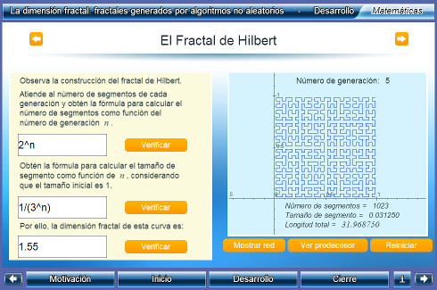 Descargar |
La dimensión fractal: fractales generados por algoritmos no aleatorios
En esta unidad se presentan principalmente los fractales de Koch, Hilbert, y la isla de Gosper con el objeto de introducir al alumno las dos propiedades de los fractales: autosimilitud e invarianza de escala. Adicionalmente, se analiza la divergencia de la longitud de las curvas si se consideran sólo unidimensionales, justificando así la necesidad de considerar dimensiones distintas para la curva, que no necesariamente han de ser enteras. A pesar de considerarse sólo fractales diseñados, se deja abierta la posibilidad de considerar dimensión fractal para fractales "experimentales", mismos que se abordan en otra unidad. Área: Matemáticas, Geometría, Cálculo Nivel: Licenciatura |
|
|
Un_084_LaDimensionFractal_2 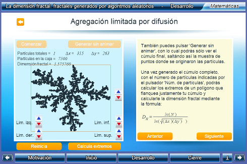 Descargar |
La dimensión fractal: fractales generados por algoritmos aleatorios
Continuando el tema introducido en la unidad 'La dimensión fractal: fractales generados por algoritmos no aleatorios', la presente unidad lidia con fractales generados por algoritmos que involucran aleatoriedad, en particular el generado mediante agregación limitada por difusión (DLA, por sus siglas en inglés de Diffusion Limited Aggregation). Se estudia otra forma de cálculo de la dimensión fractal para ellos (una forma de conteo de celdas conocido en inglés como 'box counting method'), y se pone en relación con el ejemplo del fractal de Hilbert de la unidad previa. Adicionalmente, se hace una asociación con los fractales presentes en la naturaleza y se sugiere a la dimensión fractal como una "huella digital" del algoritmo de formación de dichos fractales, misma que compartirán todos con un algoritmo semejante. Área: Matemáticas Nivel: Licenciatura |
|
|
Un_086_CaosDeterminista 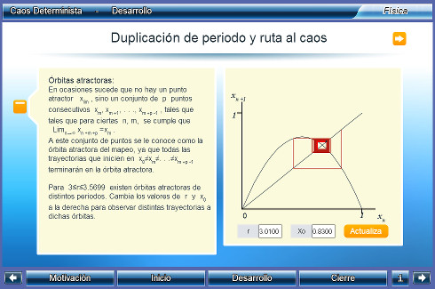 Descargar |
Caos Determinista
Se introducirá al alumno al tema de Caos. Se desarrollará el tema desde el ámbito de los mapeos discretos unidimensionales, en especial el mapeo logístico, para que el alumno conozca las principales características del caos, y algunos métodos de observación y cuantificación. Área: Matemáticas, Sistemas Dinámicos, Caos Nivel: Licenciatura |
|
|
Un_101_CalculoIntegral 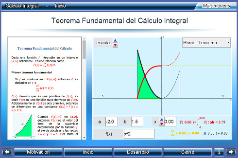 Descargar |
Cálculo integral
La determinación de la recta tangente a una curva y el cálculo de áreas son dos problemas que han ido resolviéndose históricamente por caminos diferentes y, a priori, parecen no tener relación. Pero el Cálculo Diferencial permitió mostrar que, ambos, no son más que dos caras de la misma moneda. Adicionalmente, la autoría de éste cálculo fue muy disputada entre Newton y Leibniz y ello dio base a establecer que la misma queda asociada a la fecha de publicación. Newton y Leibniz fueron dos genios, mal avenidos, pero ciertamente ambos llegaron a ver más no sólo por ir a hombros de gigantes, sino porque ambos supieron mirar muy lejos. En esta unidad se: a) Formula el Teorema fundamental del Calculo Integral que relaciona a la función área con la derivación b) Se enunciar la Regla de Barrow que permite el cálculo de la integral definida en base a las primitivas de una función y consecuentemten establece la necesidad de cálcular dichas primitivas. c) Aprender a calcular primitivas por diferentes métodos. d) Aplicación al cálculo de áreas de trapecios mixtilíneos y área encerrada entre dos curvas. Área: Matemáticas, Cálculo, Análisis Nivel: Licenciatura |
|
que implemente el Canvas de HTML5, como por ejemplo: Google Chrome, Mozila Firefox o Safari |